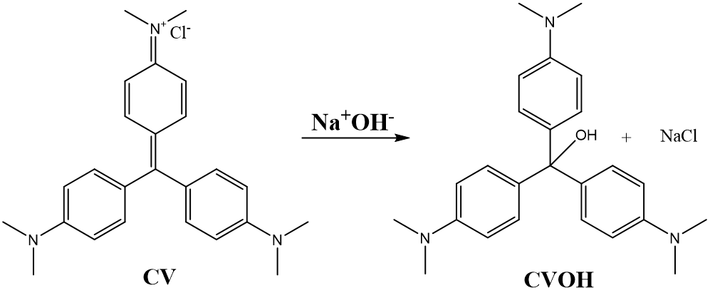

Table of Contents
After having completed this lab experiment, students will
Know:
Understand:
Do:
Chemistry: Atoms First from OpenStax, Print ISBN 1947172646, Digital ISBN 1947172638, chapter 17.
In this lab you will study the kinetics of the hydrolysis reaction of crystal violet with sodium hydroxide (NaOH). As the reaction proceeds, you will see the violet-colored reactant slowly change color as the colorless product forms. You will perform the reaction with different NaOH concentrations to determine the apparent (pseudo) and the true rate constants for this reaction.
TO DO before coming to the lab:
TO DO during the lab:
TO DO after the lab:
This lab grade is 30 points total. The breakdown for this lab is as follows.
|
Points |
Item |
Requirements |
|
2 points |
Personalized procedure |
Signed by your TA at the beginning of the lab and submitted electronically on MyCourses within 2 days from your lab |
|
5 points |
Pre-Lab quiz |
On-line before the lab starts, to be able to access the Data Sheet and the Report Forms |
|
3 points |
Datasheet |
Signed by your TA at the end of the lab and submitted electronically on MyCourses within 2 days from the lab |
|
20 marks |
Lab report |
Filled-in individually after the lab and submitted on MyCourses in .pdf format within 2 days after the lab |
Reactions can occur over a wide variety of time intervals. Some reactions are very slow. For example, it takes years for a copper roof to become green, forming basic copper carbonates and sulfates. Other reactions are very fast and almost instantaneous, such is acid-base reactions. The vast majority of reactions fall somewhere between these two extremes on the time scale. By studying the parameters affecting the rate of a reaction, chemists can find ways to speed up or slow down a reaction. The data generated during the kinetics experiments, such as reaction order, also allows us to elucidate the reaction mechanism and what the reaction pathways is. For example, if there are any intermediates, etc.
In this experiment, you will study the reaction of crystal violet with sodium hydroxide (NaOH).
Crystal violet, also called gentian violet, is a violet dye (Figure 1) with a wide range of antibacterial, antifungal and other medicinal properties. It is also used as a dye in textile industry and for staining gram positive bacteria (Figure 2).
Have you ever had your dental hygienist stain your teeth with a violet dye to show you whether the bacterial plaques are? They probably used the crystal violet dye!

Why are we interested in kinetics of crystal violet hydrolysis? Crystal violet is very toxic to aquatic organisms and should not be released to the waterways. Its use in textile and plastic industry produces large amounts of waste water contaminated with crystal violet (Salahudeen, N., Rasheed, A.A. Kinetics and thermodynamics of hydrolysis of crystal violet at ambient and below ambient temperatures. Sci Rep 10, 21929 (2020)). This waste water can be reused in the industrial processes if the color is removed. The removal of the residual crystal violet color can be achieved by treating the water waste with sodium hydroxide to hydrolyze crystal violet and to produce colorless product (Figure 3). It is important to know the kinetics of this reaction to design optimum waste treatment procedure.

We can simplify the scheme in Figure 3 to an abbreviated form:
The rate law for this reaction is:
where:
\(k\) : rate constant for the reaction
\(m\) : order of the reaction with respect to the hydroxide ion (\(\ce{OH^-}\))
\(n\) : order of the reaction with respect to crystal violet (\(\ce{CV}\))
When we do kinetics experiments, we normally want to observe a change in concentrations of the reagents over time.
As crystal violet absorbs in the visible range (maximum absorbance at 590 nm), we can monitor its disappearance over time by using colorimetry. However, we cannot easily monitor changes in concentrations of both crystal violet and NaOH simultaneously.
If we use a very large concentration of hydroxide (for example1000 times larger than the concentration of crystal violet) then [OH-] will not change appreciably during the reaction and thus we can assign [OH-]m as constant.
We can, therefore, re-write the equation 2 as
where:
Since absorbance is proportional to the concentration of \(\ce{CV}\) (Beer's Law), we can use the absorbance to determine the concentration of crystal violet. Once the order with respect to \(\ce{CV^}\) has been determined, you will also determine the rate constant (\(k\)) and order (\(m\)) for this reaction.
The order of a reaction can only be determined experimentally. Often, chemists will hypothesize that a reaction has a particular order and then test the validity of that assumption. In this experiment, you will test whether your data (changing concentration over time) fits best zero order, first order, or second order linear plots. You will then assign the corresponding order based on which of the plots gives you the best linear fit, meaning which of the plots has the coefficient of determination R2 closest to 1.
If the reaction is zero order in \(\ce{CV^}\), then \(n = 0\) and:
If the reaction is first order in \(\ce{CV}\), then \(n = 1\) and:
If the reaction is second order in \(\ce{CV}\), then \(n = 2\) and:
| Item | Quantity |
|---|---|
| 100 mL beaker | 3 |
| 25 mL graduated cylinder | 1 |
| 500 mL beaker | 1 |
|
Vernier interface |
1 |
| Pasteur pipette bulbs | |
| Pasteur pipettes | |
| colorimeter | 1 |
|
cuvette |
3 |
|
sharpie |
1 |
| Chemical | Quantity |
|---|---|
|
0.100 M sodium hydroxide, NaOH |
50 mL |
|
5.00 x 10-4 M crystal violet aqueous solution |
~12 drops in total |
|
distilled water |
Chemical Safety and SDS Sheets
Warning
Do the following step quickly!
4. Begin the reaction by adding 2-3 drops of the crystal violet solution to the cuvette with NaOH solution A, cap is with a lid and, holding the lid with your index finger, turn the cuvette upside down twice. Wipe off the outside of the cuvette with a Kimwipe and gently tap the cuvette if you need to get rid of any bubbles.
5. Place the cuvette in the colorimeter and check with absorbance of the CV on the right side of the screen. If it is more than 0.7 units, wait until it drops 0.7 and then press the  at the left bottom corner of the screen. Absorbance data will be collected for 5 minutes.
at the left bottom corner of the screen. Absorbance data will be collected for 5 minutes.
6. Ensure that the run has proceeded and then discard the waste from the run into the 500 mL waste beaker. Rinse the cuvette twice with a small amount of water, but do not dry it.
7. If the absorbance level drops below 0.1 before the run is over, you can manually stop the run by pressing on the red square button at the left bottom corner of the screen.
7. The linear dynamic range (when the absorbance is directly proportional to concentration) of the colorimeters is between 0.7 and 0.1 absorbance. We do not need to have all of the data points within that range but we want as many as we can between 0.7 and 0.1. If your absorbance is above 0.8 when you insert your cuvette, wait until it drops to 0.7 and press "Start". If the absorbance is above 0.7 for the final data point you should redo the trial. You do not need change your cuvette, simply press "Start" on the Vernier apparatus and run for another 5 minutes and you should have data in the valid range.
8. Save your run by pressing the  icon on the right side of the screen.
icon on the right side of the screen.
Saving
The Save step is crucial! If you do not save your data, you will not be able to retrieve your results for your report.
8. Repeat Steps 4-7 with solutions B and C.
9. On your Data Sheet, record NaOH concertation for each run# .
 and then
and then  . The display should inform you if the e-mail was sent correctly.
. The display should inform you if the e-mail was sent correctly.Info
The e-mail will be sent by labs.chemistry@mcgill.ca; please ensure that it does not end up in your junk mail.
Dispose of the waste in your waste beaker to the appropriately labelled white waste container. Rinse all your glassware with distilled water.
You will calculate the order of the reaction with respect to CV DURING THE LAB. Please bring your electronic device.
In the introduction, we mentioned that the concentration of crystal violet \(\ce{[CV^]}\) is related to the absorbance in a relationship defined by Beer's Law:
where:
\(A\) : absorbance
\(a\) : absorptivity constant (\(L \ mol^{-1} cm^{-1}\))
\(b\) : path length of cell (\(cm\))
\(c\) : concentration of \(\ce{CV}\) (\(mol \ L^{-1}\))
The absorptivity constant (a) of crystal violet under the conditions used in this lab is 4.3 x 104 L mol-1 cm-1; the path length of the cell is 1.00 cm. Now that we know the values of both a and b, described above, we can convert between absorbance and concentration by rearranging Beer's Law, as follows:
1. Download the order.xlsx file on your device from MyCourses
2. Open the data file that you received from your Vernier tablet as a text file. Depending on your software, you can also open the file directly in Excel by using "Open with" and choosing Excel. Please use an Excel on-line app if you are working on a Macintosh device to ensure compatibility.
3. In order to determine the order of the reaction, copy the data for each trial and into the order.xlsx.
4. The spreadsheet is pre-set to convert the absorbance values into concentration values. The linear dynamic range of the colorimeters we use in the lab ranges between an absorbance of 0.1 and 0.7. The excel file will automatically remove any data points outside of this range. You will see #N/A in the excel file. This is normal and should not have an impact on your results.
5. Using your raw data, the spreadsheet Excel program will plot all three order curves (zero, first, second) by calculating \([CV]\), \(ln[CV]\), and \(1/[CV]\).
6. From the three graphs generated, you should be able to visually identify which curve is linear. In addition, you can also look at the \(R^2\) value. An \(R^2\) value close to 1 indicates that your trendline is a good fit for your data; in our case, an \(R^2\) closest to 1 suggests which of our particular linear models is appropriate. From the graphs and the \(R^2\) values, you can determine the reaction order (zero, first, or second) for each of your data sets at each temperature.
\(OH^-\)
Yes, the rate of a reaction changes with temperature, it will increase as temperature increases.